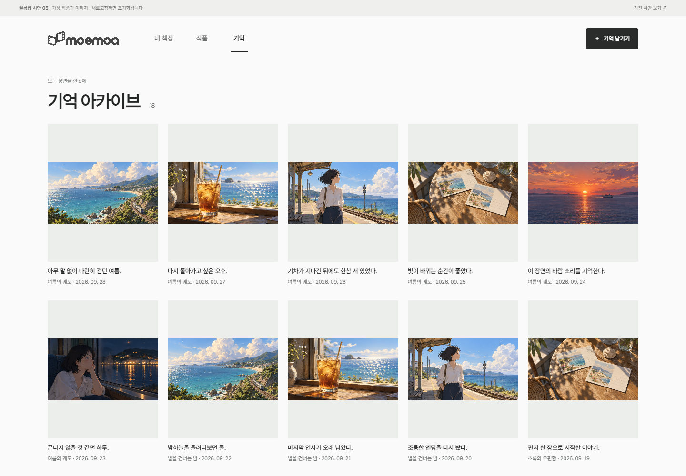
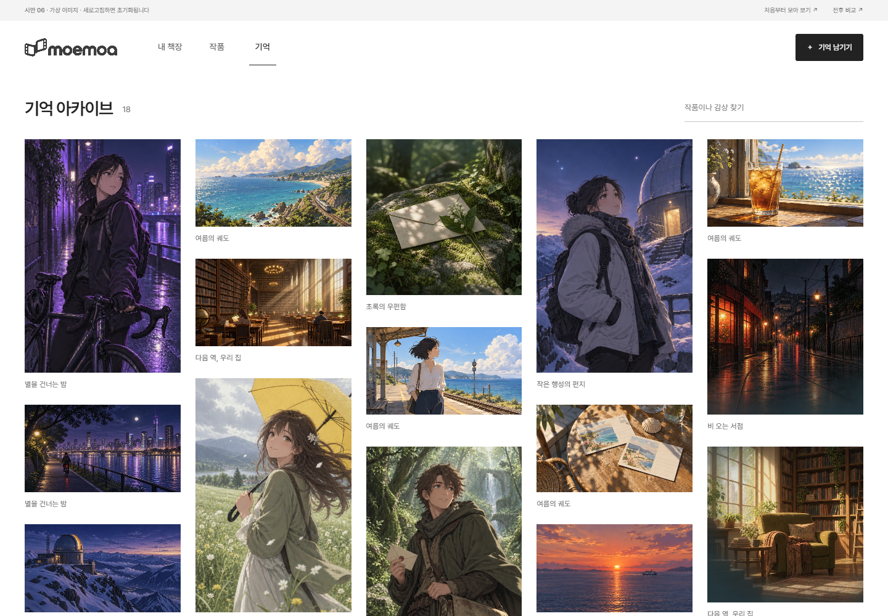

01 · 틀보다 이미지
고정된 4:5 틀을 없앴습니다. 상하 색 여백이 차지하던 55%를 제거하고, 이미지마다 본래 비율로 높이가 정해집니다.
02 · 반복보다 취향
여러 작품에 반복되던 장면을 작품별로 구분했습니다. 감상과 날짜는 상세에서 읽고, 목록에는 이미지와 짧은 작품명만 남겼습니다.
03 · 전시에서 수집으로
빈 아카이브에서 첫 장면을 고르고 작품에 연결해 보세요. 추가한 기억이 전체 목록과 해당 작품의 필름에 함께 나타납니다.
새 이미지는 시안용으로 생성한 가상 장면입니다. 원본 작품·개인 사진을 사용하지 않았으며, 이미지 선택과 작성은 새로고침하면 초기화됩니다. 작품 표지 그리드·개인 책장·필름을 당기는 조작은 유지했습니다.